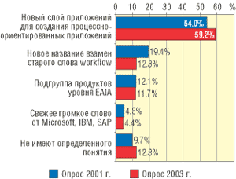
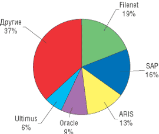
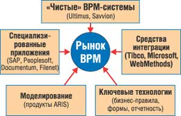
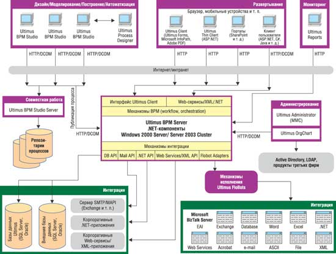
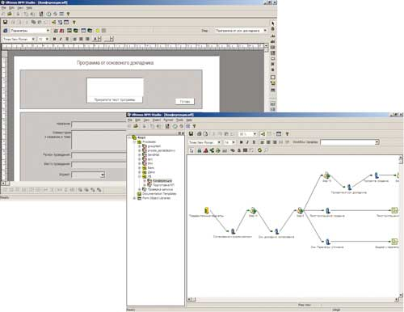
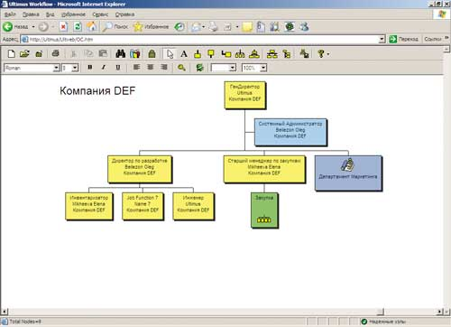
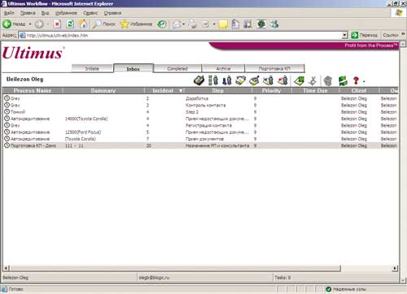
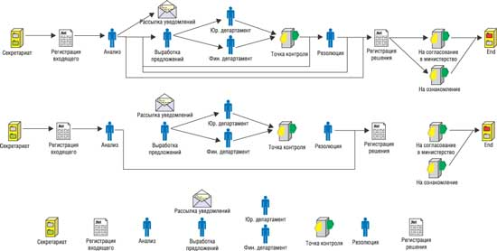

Антон Шматалюк, директор по развитию,
Олег Бейлезон, старший ИТ-консультант,
компания "Логика бизнеса"
Технология BPM (Business Process Management - управление бизнес-процессами) в нашей стране начала завоевывать популярность сравнительно недавно. По наблюдениям авторов, эта популярность во многом обусловлена тем, что внутри бизнес-подразделений, у их руководителей, сформировалась потребность в таком технологическом решении, которое обеспечило бы жесткий контроль за выполняемыми процедурами, позволило бы повысить их скорость и управляемость. ИТ-специалисты, со своей стороны, конечно же, были знакомы с традиционными технологиями workflow, из которых выросли решения класса BPM, но основной упор ранее все же делался на внедрение базовых технологий - финансово-учетных систем, систем класса ERP, CRM и т. п.
Однако времена меняются, и современный бизнес начинает выдвигать новые требования прикладного характера. Все чаще ИТ-подразделения компаний сталкиваются с задачами, формулируемыми в таких терминах, как "процесс", "маршрутизация заданий", "мониторинг загрузки сотрудников", "автоматизация сквозных процедур". Эти термины, в принципе отнюдь не новые, все же не слишком типичны для "традиционных" информационных систем, выполняющих в основном учетную и аналитическую функцию. Начиная же искать на рынке решения, ставящие такого рода понятия во главу угла, прикладные специалисты неизбежно наталкиваются на аббревиатуру BPM и с удивлением обнаруживают, что под ней подразумеваются системы, на первый взгляд совершенно не схожие друг с другом по функциональному назначению. Возникающая при этом путаница отнюдь не способствует популяризации информационных систем класса BPM в России, несмотря на то, что необходимость таких систем в любой современной организации очевидна.
В этой статье мы попытаемся "пролить свет" на технологию BPM и, дав обзор рынка, ответить на вопрос, какие информационные системы и почему причисляют к классу BPM.
Определение BPM - управленческий и технологический аспекты
В самом общем виде цель управления бизнес-процессами можно определить как создание таких механизмов, которые обеспечили бы повышение эффективности деятельности компании через непрерывное совершенствование идущих в ней процессов. Для достижения этой цели необходимо объединение средств и методов, поддерживающих в рамках единого цикла управления решение следующих задач: проектирование процессов, их внедрение (автоматизация), оперативное управление выполнением процессов, мониторинг показателей эффективности процессов, анализ статистики и выявление причин низкой эффективности процессов, постановка задачи, нацеленной на совершенствование процессов.
Сделав акцент на ИТ-составляющей этого явления, можно сформулировать следующее определение BPM: это совокупность приложений и систем класса middleware, поддерживающих специализированные задачи управления "сквозными" процессами (моделирование, внедрение, оперативное управление и администрирование, мониторинг и анализ показателей эффективности), обеспечивая слаженное взаимодействие людей и информационных систем.
Многие специалисты, увидев это определение, наверняка вспомнят о технологии workflow и связанных с ней программных решениях. Провести четкую границу между этими двумя технологиями не так просто, тем более что многие workflow-решения со временем превратились в системы класса BPM. Если обратиться к определению, данному Workflow Management Coalition, то решение workflow - это "система, которая описывает, создает и управляет выполнением потока работ при помощи ПО, которое способно интерпретировать описание процесса, взаимодействовать с участниками потока работ и, при необходимости, вызывать соответствующие приложения и ИТ-инструменты". Очень похоже на то, что мы сформулировали для систем класса BPM. Существенная разница заключается в том, что система workflow позволяет "при необходимости вызывать соответствующие приложения и ИТ-инструменты", в то время как BPM обеспечивает "слаженное взаимодействие людей и информационных систем" за счет современных технологий интеграции. Упомянем и еще одно важное отличие - в BPM-системах имеются более развитые средства мониторинга и анализа показателей эффективности процессов.
Все эти факторы определяют важное с точки зрения бизнес-результата различие двух технологий, которое сформулировано, к примеру, американской аналитической компанией Delphi Group следующим образом: "В отличие от workflow, BPM фокусируется на том, чтобы помочь организации увеличить ее продуктивность и способность к быстрому реагированию на изменения внешней среды".
Таким образом, можно смело говорить о том, что технологии автоматизации и управления бизнес-процессами перешли от "детской" фазы workflow, когда основное внимание уделялось тому, как организовать взаимодействие людей в рамках процесса, к более зрелой фазе BPM, когда особый акцент делается на том, какие цели ставятся и как обеспечить их достижение при помощи данных технологий.
Требования к решениям класса BPM
Определив, что представляет собой технология BPM и какие задачи она призвана решать, следует уточнить, какие требования предъявляет рынок к этим продуктам. Достаточно показателен в этом отношении отчет Delphi Group, где приведена статистика, касающаяся планирования инвестиций в решения класса BPM. Согласно этому отчету, большинство опрошенных организаций - почти 80% - осознали необходимость внедрения BPM-систем. При этом почти треть опрошенных либо уже используют такие системы, либо заканчивают проект их внедрения, а половина респондентов находится на ранней стадии, т. е. выбирает систему или приступает к ее внедрению. Конечно, в России и странах СНГ ситуация выглядит иначе, но это только нагляднее демонстрирует перспективы рынка BPM-систем в нашем регионе.
В период становления понятия BPM менялись требования, предъявляемые к этой технологии, менялось и само понимание данного термина. Рис. 1 демонстрирует не только эволюцию понятия BPM, но и, как следствие, смену ожиданий от этой новой технологии. Можно видеть, что со временем все большая часть опрошенных начинает воспринимать BPM именно как технологию создания процессно-ориентированных приложений (чем, по сути, и является автоматизация бизнес-процессов), и все меньшая часть их считает, что это подмена понятий или ловкий маркетинговый ход гигантов ИТ-индустрии. Таким образом, роль приложений класса BPM в информационной инфраструктуре предприятия практически определена.
|  |
| Рис. 1. Как менялось представление о BPM со временем. Источник: Delphi Group, 2003.
|
Что же, по мнению опрошенных аналитиками специалистов, наиболее важно в любой системе класса BPM? Ответ на этот вопрос может дать еще одно исследование Delphi Group, определяющее самые необходимые, по мнению респондентов, элементы любой системы класса BPM. Как показало это исследование, требования к BPM-системам не ограничиваются только моделированием и автоматизацией бизнес-процессов, но и включают в себя полный спектр отчетности (как оперативной, так и аналитической), управление вовлеченными в процессы пользователями и, конечно же, широкие возможности интеграции с другими приложениями, вплоть до того, чтобы рассматривать BPM-систему как единую процессно-ориентированную интеграционную платформу для всех приложений на предприятии.
Приведенные результаты опросов наглядно демонстрируют, что современный потребитель вполне представляет себе, что такое BPM-системы и какие задачи они должны решать в его организации. Посмотрим теперь, какие предложения присутствуют на рынке.
Структура рынка BPM
Изучение рынка BPM-систем без предварительной подготовки скорее все запутает, нежели прояснит. Лучше всего эту ситуацию иллюстрирует рис. 2, где представлены наиболее часто упоминаемые решения, ассоциирующиеся с технологией BPM. Но даже у сведущего в ИТ-тематике человека эта диаграмма может вызвать легкое недоумение: ведь продукты ARIS традиционно считаются средством описания и анализа бизнес-процессов, SAP относится к системам управления ресурсами предприятия, а Oracle ассоциируется в первую очередь с базами данных, аналитическими средствами, средствами интеграции и лишь немного - с workflow-технологиями. Что же у этих систем общего?
|  |
| Рис. 2. Структура рынка решений, ассоциирующихся с BPM.
|
Корни путаницы кроются не в чем ином, как в многогранности самого понятия BPM (об этом мы говорили в начале статьи). Ведь технология BPM охватывает все стадии управления бизнес-процессами - от построения стратегии к моделированию бизнес-процессов, их анализу и оптимизации, далее - к внедрению, контроллингу, анализу результатов и снова к моделированию с целью совершенствования, замыкая, таким образом, цикл управления.
В такой ситуации совершенно естественно, что есть множество продуктов, которые, охватывая функциональностью часть вышеперечисленных стадий, причисляют себя к BPM-системам. Поэтому рынок BPM-систем в целом тоже можно сегментировать. Наше видение такого сегментирования приведено на рис. 3. Из него видно, что большинство современных средств, предоставляющих специфичный функционал (ERP, EAI, ECM и т. д.), обладают и отдельными возможностями поддержки бизнес-процессов.
|  |
| Рис. 3. Сегментирование рынка BPM.
|
Но при этом на рынке существует класс так называемых чистых BPM-систем, т. е. систем, изначально проектировавшихся и разрабатывавшихся для того, чтобы обеспечить ИТ-поддержку всех этапов управления процессами - от моделирования и анализа до мониторинга и контроля версий. Данные системы делают особый упор именно на автоматизацию "сквозных" бизнес-процессов, вне зависимости от того, какими средствами ИТ они поддержаны. Именно о таких системах пойдет речь ниже в данной статье.
"Чистые" BPM-системы
Даже сузив и без того специализированный рынок систем класса BPM до подмножества "чистых" BPM-продуктов, потребитель все равно остается перед ситуацией множественного выбора. Так, "магический квадрат" Gartner для рынка "чистых" BPM (ежегодный отчет компании Gartner Group, ранжирующий всех игроков данного сегмента рынка по двум параметрам: перспективность и зрелость идей, с одной стороны, и способность реализовать эти идеи - с другой) за 2004 г. включает более 40 фирм-поставщиков BPM-решений. Отечественного пользователя, правда, "выручает" то обстоятельство, что лишь немногие из этих фирм вышли со своими решениями на рынок стран СНГ - одни еще не осознали его перспектив, другие испытывают затруднения с поддержкой русского и других национальных языков, третьи опасаются рисков, неизбежно возникающих при работе в нашем экономическом пространстве, и т. д.
Таким образом, речь пока идет лишь о небольшом количестве "смельчаков", продуктами которых на территории стран СНГ можно воспользоваться на законных основаниях, получая необходимые консультации и техническую поддержку при внедрении и эксплуатации. Одна из таких систем - Ultimus BPM Suite, разработанная американской компанией Ultimus и распространяемая на территории России и стран СНГ консалтинговой компанией "Логика бизнеса" (http://www.blogic.ru). Ultimus BPM Suite принадлежит к группе лидеров в "магическом квадрате" Gartner Group и занимает первое место в опубликованном в феврале 2004 г. отчете компании Forrester, содержащем оценку BPM-систем по десяти различным показателям (качество архитектуры, уровень реализации возможностей, положение на рынке, стоимость владения и т. д.).
Система Ultimus BPM Suite
Компания Ultimus (http://www.ultimus.com), основанная в 1994 г., изначально была ориентирована на создание решений, поддерживающих быструю и эффективную автоматизацию бизнес-процессов. Сегодня ее продукты применяют более 1200 компаний по всему миру. В списке клиентов Ultimus - организации из самых различных отраслей - производственные, финансовые, консалтинговые, ИТ-компании, государственные учреждения и многие другие, в деятельности которых качество управления бизнес-процессами играет серьезную роль. В настоящий момент предлагается уже 6-я версия системы и готовится к выпуску 7-я.
Разрабатывая Ultimus BPM Suite, компания Ultimus стремилась, чтобы продукт обладал следующими характеристиками:
- непрерывность цикла управления бизнес-процессами;
- описание бизнес-процессов в графическом виде, в рамках методологии, понятной как бизнес-аналитикам, так и ИТ-специалистам;
- гибкость механизма описания, позволяющая не изменять бизнес-процессы под нужды системы, а внедрять их именно в том виде, в каком они требуются бизнесу;
- легкость внедрения описанных процессов;
- легкость разработки пользовательских форм;
- возможности интеграции с различными приложениями на любом уровне - от ядра системы до пользовательских форм;
- широкие возможности мониторинга и администрирования как процессов, так и вовлеченных в них пользователей;
- открытость внутренних структур данных для внешних средств мониторинга и анализа;
- легкость доступа клиентов к серверу системы;
- легкость развертывания системы.
Ниже мы поговорим о том, насколько хорошо компания справилась с поставленными целями, какие архитектурные решения и механизмы были для этого применены.
Функциональность
На рис. 4 приведена структурная схема системы Ultimus BPM Suite, демонстрирующая взаимодействие между модулями и механизмы, реализующие это взаимодействие. Здесь стоит сказать, что Ultimus BPM Suite в подавляющем большинстве использует технологии Microsoft (а компания Ultimus имеет у Microsoft статус Gold Certified Partner), так что "изобретать велосипед", адаптируясь к капризам новой платформы, не придется.
|  |
| Рис. 4. Структурная схема Ultimus BPM Suite.
|
Ядро системы - Ultimus BPM Server. Реализован этот модуль в виде Windows-сервиса и набора компонентов для подключения. BPM Server поддерживает технологии масштабирования и балансировки загрузки и может размещаться на нескольких серверах. В качестве хранилища данных используется как Microsoft SQL Server, так и база данных Oracle. Именно на этом сервере работают все запущенные в системе экземпляры процессов. Стоит отметить, что сервер поддерживает одновременно несколько версий запущенного процесса - если процесс был изменен, то можно разрешить тем экземплярам, которые были запущены ранее, продолжить выполнение в первоначальном варианте описания. Интерфейсы сервера, реализованные в виде .NET- и Web-сервисов, позволяют применять его workflow-функционал любой внешней системе.
Как отдельный механизм (в виде компонента COM+) реализован BPM Studio Server - сервис для разработчиков, позволяющий вести коллективную работу над процессами, контролировать версии, разделять права доступа разработчиков к различным процессам и т. п. Рабочее место разработчика - Ultimus BPM Studio Client. Это программа, подключающаяся к Studio Server и предназначенная непосредственно для разработки. Studio Server состоит из двух подмодулей - Process Designer и Builder.
Process Designer - это средство предварительного моделирования бизнес-процессов, позволяющее построить процесс, не вдаваясь в тонкости проектирования форм и механизмов интеграции, и провести имитационное моделирование. Для этого Process Designer предоставляет в распоряжение аналитика механизмы сценариев поведения процесса и средства отчетности, позволяющие исследовать затратные и временные характеристики процесса.
Более интересен с точки зрения разработчика инструмент Ultimus Builder (рис. 5). Этот модуль позволяет решать следующие задачи.
|  |
| Рис. 5. Модуль Ultimus Builder.
|
Разработка карты процесса (структуры и предварительной логики бизнес-процесса). Для этого используется графический редактор, позволяющий "расставить" на карте шаги различного типа - пользовательские, автоматические, шаги подпроцессов и т. д., и прочертить связи между этими шагами, задать время выполнения каждого шага и реакцию на задержку выполнения.
Определение процессных переменных. Все переменные процесса хранятся в единой таблице (подобной листу Excel), и механизм работы с ними не сложнее работы с Excel.
Разработка пользовательских форм. Каждому пользовательскому шагу процесса (т. е. шагу, выполняемому человеком) должна соответствовать форма отображения и редактирования данных. Для решения этой задачи Ultimus Builder предоставляет графический редактор форм, подобный редактору любой визуальной среды программирования. Помимо стандартных элементов управления, предоставляемых редактором, Ultimus Builder позволяет поместить в форму любой визуальный компонент ActiveX; таким образом, при автоматизации процесса можно использовать уже имеющиеся в организации разработки.
Определение логики следования шагов. Табличный механизм задания логики следования шагов процесса позволяет создать процесс со сколь угодно сложными зависимостями между отдельными шагами и ветками: с ветвлениями, условными и безусловными циклами, возвратом на любое число шагов назад, распараллеливанием и т. п.
Определение точек и механизмов интеграции с инфраструктурой предприятия. Для этих целей Ultimus предлагает механизм FloBots (от workFLOw roBOTS). FloBots - это специальные автоматические агенты, предназначенные для настройки и реализации различных механизмов интеграции. В распоряжении разработчика - агенты для связи с базами данных, выгрузки процессной информации в Microsoft Word, Microsoft Excel, Adobe Acrobat, для вызова .NET и Web Services, для рассылки электронной почты, обмена XML-информацией и т. д. (на рис. 4 в правом нижнем углу отображен практически полный список FloBots, предоставляемых Ultimus). Настроить большинство FloBots может даже человек, не имеющий никакого опыта в программировании. Кроме того, доступен механизм, позволяющий разработчикам создать собственные FloBots и присоединить их к уже имеющемуся набору.
Определение реакции на процессные события. Очень полезная функция в Ultimus BPM Suite - поддержка событийного механизма и предоставление разработчику возможности самостоятельно задавать реакцию системы на эти события. Событийный механизм поддерживается на всех уровнях детализации - от процесса (начало шага, окончание шага, задержка шага) до событий элементов управления на форме. Каждому из этих событий можно назначить реакцию самых разных типов - запись/чтение из базы данных, выполнение клиентского или серверного .NET-кода, а также множество других реакций.
Эмуляция реального выполнения процесса. Проверить, как функционирует разрабатываемый процесс, можно прямо в ходе его создания, не размещая и не запуская его на сервере. В процессе моделирования можно проверить как логику поведения процесса, так и работу пользовательских форм, агентов интеграции и т. д. При этом основной (продуктивный) сервер никак не задействован в моделировании.
Установка разработанного процесса на сервер. Процесс можно установить на продуктивный сервер сразу после разработки, без промежуточных этапов. Установленный процесс готов к эксплуатации, экземпляр этого процесса может запустить любой сотрудник, имеющий соответствующие права.
Следующий компонент системы, имеющий отношение к разработке, - Ultimus OrgChart (рис. 6). OrgChart реализован в виде клиента ActiveX и предназначен для графического построения организационной структуры предприятия. Созданная организационная структура используется в ходе разработки процесса и при его выполнении и предназначена для распределения сотрудников по должностям, задания отношений подчиненности и членства в различных рабочих группах. Информацию о сотрудниках OrgChart может черпать из использующихся в организации структур Active Directory и LDAP.
В целом механизм привязки исполнителей на шагах не только к физическим сотрудникам организации, а к различным элементам в оргструктуре дает дополнительную гибкость при использовании Ultimus BPM Suite - например, если исполнитель на какой-либо должности меняется, то достаточно сделать простое изменение в оргструктуре для того, чтобы эти изменения распространились на все процессы, в которых задействована данная должность. Кроме того, отношения подчиненности и присутствия в различных группах могут определять принципы назначения исполнителей, рассылки уведомлений, обработки критических ситуаций. Например, если превышен срок выполнения задания, информация об этом может быть направлена непосредственному руководителю, а само задание - передано другому исполнителю.
|  |
| Рис. 6. Модуль Ultimus OrgChart.
|
Для мониторинга процессов, инцидентов, шагов, пользователей и для общего управления системой предназначен модуль Ultimus Administrator. С его помощью можно управлять:
- сервером (техническими настройками, параметрами аутентификации и т. д.);
- процессами (установка, обновление, контроль версий, удаление);
- экземплярами процесса (мониторинг, остановка, переназначение исполнителей на шагах);
- шагами процесса (мониторинг, административное редактирование и т. д.);
- пользователями (загрузка, права доступа).
Взаимодействие с пользователями осуществляется через модуль Ultimus Client (рис. 7). Этот модуль организован в виде клиента ActiveX, загружаемого через Web-браузер, поэтому никакого специального ПО на компьютеры клиентов устанавливать не требуется - достаточно передать им адрес сервера в интрасети. Через Ultimus Client пользователи могут получать задания, обрабатывать их и отправлять обратно на сервер, переназначать задания другим исполнителям, получать помощь по процессам и шагам. В Ultimus Client есть развитые возможности настройки под конкретного пользователя или группу пользователей, что позволяет отображать процессные данные именно в том виде, в котором они этим пользователям нужны. Важно также, что Ultimus не навязывает собственное клиентское место в качестве единственной возможности взаимодействия пользователя с системой - в распоряжении разработчиков имеется программный механизм, позволяющий реализовать клиентский функционал на базе уже существующих в организации портальных решений.
|  |
| Рис. 7. Модуль Ultimus Client.
|
Модуль Ultimus FloStation, реализованный в виде Windows-сервиса, предназначен для обслуживания автоматических агентов FloBots. В конфигурации Ultimus BPM Suite может быть несколько модулей FloStation, что позволяет распределять нагрузку, возникающую при интеграции Ultimus с другими приложениями.
Замыкает список модулей компонент Ultimus Reports, предназначенный для построения оперативных и аналитических отчетов по процессам, шагам и вовлеченным в них исполнителям. Этот модуль содержит более десяти предопределенных типов отчетов, которые можно настраивать под конкретные требования бизнеса. Важно при этом осознавать, что в силу открытости внутренней структуры базы данных Ultimus возможности мониторинга и анализа не исчерпываются функционалом Reports и ограничены только бизнес-требованиями организации и мастерством разработчиков.
Перспективы развития
В заключение хотелось бы обсудить одну из основных сложностей автоматизации процессов, которую в самое ближайшее время предполагается устранить за счет новой патентованной технологии от компании Ultimus. Приведем выдержку из документа Microsoft's Next Frontier:
"Жан-Жак Дюбре, архитектор: "Совсем недавно я разговаривал с главным системным архитектором одной крупной компании, и он поразил меня следующей информацией: его компания только что завершила описание всех своих бизнес-процессов. Я сказал: "Замечательно, теперь вы готовы к использованию технологии BPM". "Ну, не совсем так, - возразил он. - Результаты показали, что большая часть наших процессов настолько сложна по своей структуре, что даже полученное описание слегка пугает, не говоря уже о том, что автоматизация и управление изменениями подобных процедур представляется практически невыполнимой задачей".
Но ведь даже в таких ситуациях нельзя отказываться от автоматизации и нельзя становиться заложником информационных систем, препятствующих изменениям. Именно для разрешения таких непростых ситуаций компания Ultimus разработала и запатентовала технологию Ultimus Adaptive Discovery.
Эта технология, во-первых, позволяет внедрять и использовать процесс, даже если карта процесса не проработана, за счет определения правил (логики) процесса уже по ходу его выполнения, изучения этих правил и адаптации процесса для дальнейшего его использования. Во-вторых, технология отделяет логику процесса от остальных его компонентов (данных, электронных форм, элементов интеграции, участников). Таким образом, мы получаем возможность управлять следующими тремя видами процессов (рис. 8): строго формализованными, частично формализованными и абсолютно гибкими.
|  |
| Рис. 8. Ultimus Adaptive Discovery позволяет управлять тремя видами процессов.
|
В результате ИТ-специалисты владеют информационной инфраструктурой, в то время как бизнес-подразделения могут самостоятельно управлять действиями и логикой процессов в рамках своей ежедневной работы.